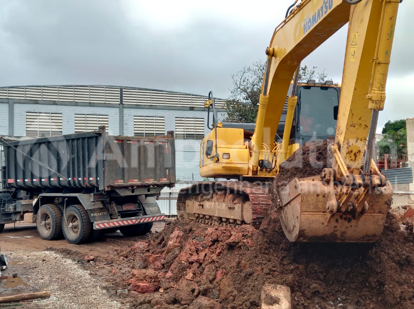

Projetos
Obras civis
A Ambsolution também realiza projetos de obras civis, com foco em edificações, que incluem o reconhecimento da área e operação da empresa. Esse reconhecimento permite o planejamento das etapas seguintes e a escolha dos equipamentos adequados, bem como o layout do canteiro de obras que cause o mínimo de impacto possível nas operações.
Durante a execução dos projetos, Engenheiros fazem a fiscalização, garantindo o cumprimento de todas as normas técnicas em vigência no país. Os serviços prestados são acompanhados por Anotações de Responsabilidade Técnica (ART) de acordo com a regulamentação do CREA. Além disso, a empresa contrata um Seguro de Responsabilidade Civil para cobrir possíveis danos decorrentes da utilização de seus equipamentos.